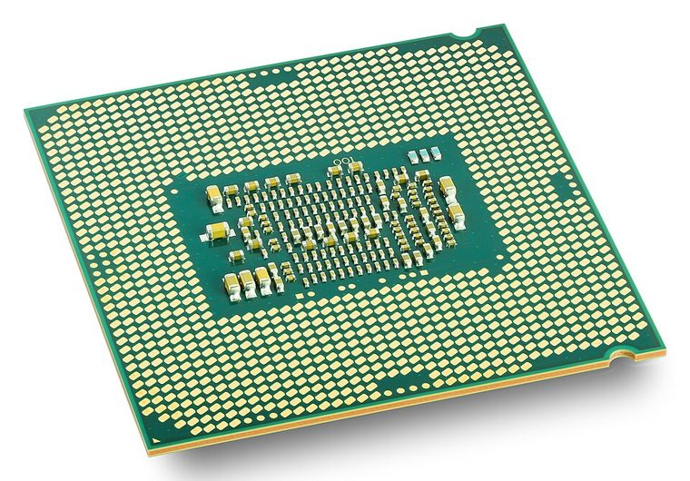
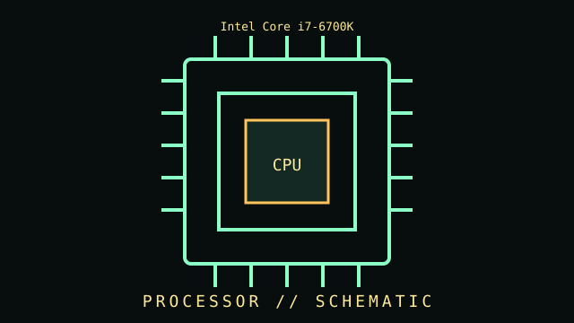

[ INDIVIDUAL COMPONENT // PROCESSORS ]
Intel Core i7-6700K
Skylake desktop CPU, launched 2015. This record describes this specific product, standard, or clearly identified family; it is not a claim that every product sold under a similar name shares these specifications.


IDENTIFICATION WARNING: Match the complete model/part number and revision to its label and manual. Family-level entries may cover revisions; values marked “common” are not guaranteed for every unit.
Specifications
| Catalog subcategory | Modern Core and Ryzen |
|---|---|
| Catalog identity | Intel Core i7-6700K |
| Era / family | Skylake desktop CPU, launched 2015 |
| Key specifications | 4 cores / 8 threads; 4.0 GHz base, up to 4.2 GHz turbo; 8 MB cache; 91 W TDP; LGA1151 |
| Interfaces / mechanical | Requires compatible 100-series motherboard and BIOS; official memory support is DDR4-2133 or DDR3L-1600 per platform |
| Compatibility and variants | Unlocked multiplier; actual sustained frequency depends on cooling, firmware, and board power limits. |
| Use / service note | Inspect condition, revision markings, firmware or configuration, connectors, and any prior repair. For preservation, record photographs of labels and board markings before cleaning or disassembly. |
Identification & compatibility checks
- Photograph manufacturer, full model number, revision, serial/date codes, connector faces, and included brackets or cables before installation.
- Confirm electrical interface, connector pinout, physical dimensions, power requirements, firmware/driver support, and the host device’s documented compatibility.
- Do not infer compatibility from a shared brand, socket silhouette, connector shape, or marketing family name. Revisions and regional SKUs may differ.
- When a unit’s identity is uncertain, compare component markings against the manufacturer manual and avoid applying power until the pinout and condition are known.
Context & archival notes
Unlocked multiplier; actual sustained frequency depends on cooling, firmware, and board power limits.
Useful collection fields: exact model and revision; manufacture date; board/assembly identifiers; firmware; accessories; condition; known faults; source of acquisition; and the document revision used to verify this entry. Any measured result should include test setup and method.
Sources & further reading
- Intel ARK — Product specificationsPrimary or standards reference for this component family; confirm the full model number and revision.
- AMD — Processor specificationsPrimary or standards reference for this component family; confirm the full model number and revision.
Source notes point to standards bodies, manufacturers, or archival records. Some sources cover a family rather than this exact revision; the manufacturer datasheet/manual for the full part number takes precedence.